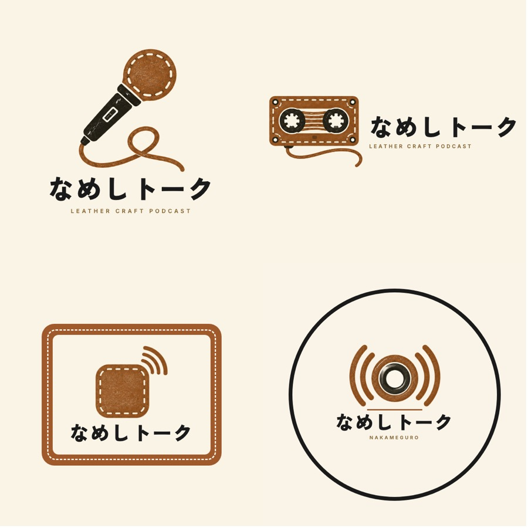
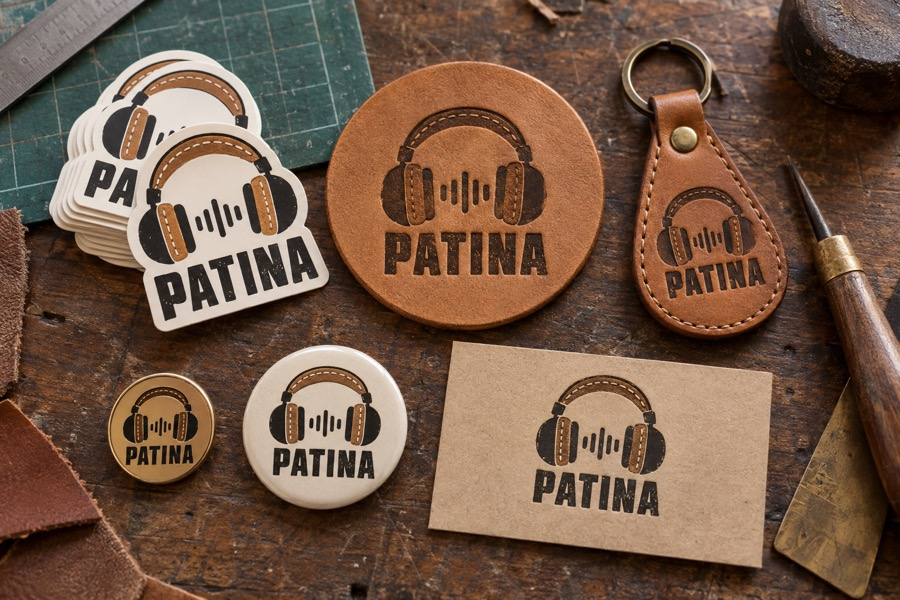
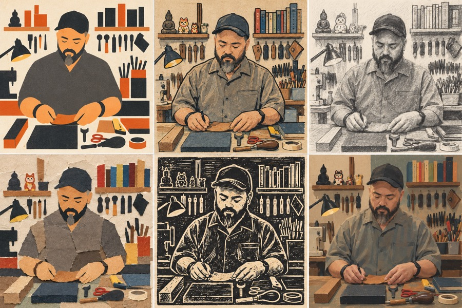

レザークラフトラジオ(仮)
企画会議
TODAY'S GOAL
今日これだけ持って帰れば勝ち
- 番組名（仮でもいいので1つ）
- 第1回の収録日と、何を録るか
- 役割分担（誰が何をやるか）
TIME TABLEタップで消し込み
- 12:00挨拶・近況。ピンマイクはここから回しっぱなしでOKか聞く（雑談がそのまま第0回の素材になる）
- 12:15ユウキから企画書をざっと見せる（5分）。「番組にするかは、まだ決めてない」前提で
- 12:30ひげちゃんのやりたいこと・やりたくないことを聞く（下の「聞くこと」）
- 13:15「決めること」を上から順に。迷ったら仮で決めて次へ
- 14:15休憩
- 14:30ロゴ・カバー絵を見せて好みを聞く
- 15:00時間があれば試し録り10分（ワークショップ風 or 対談）→その場で聞き返す
- 15:45今日決まったことを読み上げて確認。次回日程を決める
DECIDE決めること・タップで丸をつける
① 番組名
「なめしトーク」はユウキが了承ずみ。英語名＋副題の組み合わせもあり
② 形式
ひげちゃん案は「いつものワークショップをそのまま録る」
③ 長さ・頻度
④ 役割分担
ユウキ: 編集・配信・切り抜き（仕組みは既にある）／ひげちゃん: 場所・革の話・IG告知 が叩き台
⑤ 配信先
⑥ 公開のルール
編集した音を2人で聞いて、両方がいいと言った回だけ出す。奥さんの声・名前・お金の話は後から消せる
⑦ 奥さんの出演
⑧ 第1回
候補: 9/18にやる予定だったミニ財布ワークショップ録り ／ 連載「ユウキ、財布を作る」第1回（革を選ぶ）
⑨ 工房への戻し方（あとでいい）
SHOW見せるもの
企画書（9/16版）を開く — ルール7つ・コーナー8本・財布連載・ロードマップ・市場調査が全部入り



ASKひげちゃんに聞くこと
- そもそも何のためにやりたい？（工房の集客／記録／楽しいから）
- 話したくないこと・出したくないことは？
- 収録に使える曜日・時間帯（工房が静かな時間）
- IG 5.2万人に告知していい？ リールの切り抜きは本人アカウントで出す？
- YouTubeの既存チャンネルに手元映像を載せられる？
- 呼びたいゲスト（職人仲間・産地の工房）はいる？
- 外国人のお客さんは多い？ 英語回に興味ある？
NUMBERS話のネタに使う数字
1本「レザークラフト」を掲げた日本語Podcastは革日和podcast（12話）だけ
7.3万YouTube「レザークラフト塾」登録者。音声の受け皿は空いている
18.2%日本のPodcast利用率。15〜19歳は40.5%
54.8%番組をきっかけに購入・訪問したリスナーの割合
出典: オトナル×朝日新聞社 第6回ポッドキャスト国内利用実態調査（2026年2月）ほか。詳しくは企画書の市場調査へ
MEMOこの端末にだけ保存
持ち物: ピンマイク2本・予備電池・充電ケーブル